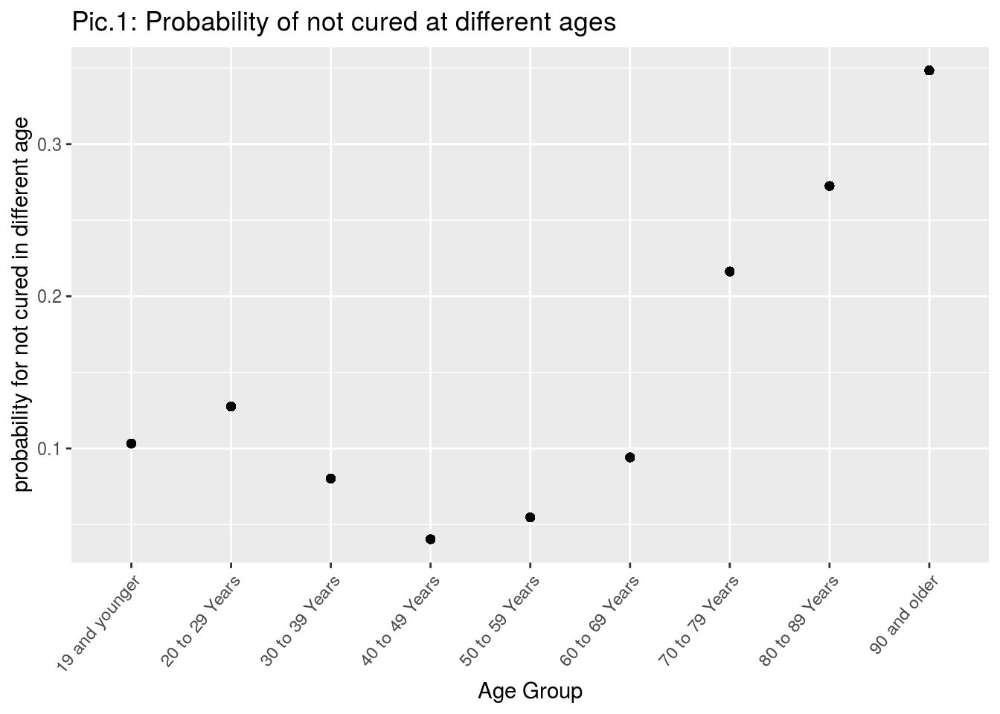

Abstract
Objective:
Based on statistical analysis, examine what features would make people in risk for severe COVID-19, and what could we do to prevent this epidemic in some degree.
Results:
Age and source are two risk factors, while gender is not. To prevent illness, people should be away from crowded people and treatments in the hospital could make people have higher probability to be cured.
I. Introduction
Since the end of 2019, an epidemic called COVID-19 has spread around the world. This is a new kind of virus which will cause respiratory illness in animals and peoples, and researches have shown that it can be transmitted from person-to-person through respiratory droplets @covid19intro1. The severity of COVID-19 is highly polarized. For mild patients they might have a fever, muscle aches, runny nose or even do not experience any symptoms; however, for those critical patients they might have respiratory failure, multiple organ dysfunction or even death @covid19intro1. Some studies of the similar types of respiratory diseases have shown that some characteristic groups of people will more likely to be infected or be more difficult to cure @covid19intro2.
Thus, the preliminary purpose of this study is to identify what would be the risk factors for severe COVID-19 based on the datasets of COVID-19 cases in Toronto @data. In this case, we could also based on the data analysis to give suggestions on prevention and treatment to those people with higher risk for severe COVID-19 to prevent them from serious illness and minimize casualties from the outbreak the COVID-19 pandemic.
II.Data Analysis
The dataset was derived from all COVID-19 cases reported to and managed by Toronto Public Health @data. This dataset contains 18 variables on 17872 observations/patients in Toronto. All the variables collected here are categorical variables, and they can be grouped into 6 categories: identification(e.g: Assigned ID), demographic(e.g: age group, gender), source(e.g: neighborhood name, source of infection), time(e.g: episode date), treatment(e.g: ever hospitalized) and outcome(e.g: the illness is confirmed or probable, recovered or have a fatal outcome) information.
Here, I consider the variable “Outcome” as my response variable. If the outcome shows “fatal” or “active” rather than “resolved”, it means that the this patient is more likely to have risk for severe COVID-19.
Before doing analysis, I firstly remove ineffective identification variables, repeated variables and data with missing values(include value with no meaning. e.g:NaN). So, there left 13 variables and 16977 observations. As I aim to identify the risk factors for severe COVID-19, I redefine the response as a binary classification: resolved or not recovered. Because, I think the risks could be shown in this way: if a large proportion of patients get sick because a characteristic and is not cured, then that characteristic is likely to be a risk factor.
Based on this criteria and response variable I do analysis on datas below:
## ── Attaching packages ──────────────────────────────────────────── tidyverse 1.3.0 ──
## ✓ ggplot2 3.3.2 ✓ purrr 0.3.4
## ✓ tibble 3.0.3 ✓ dplyr 1.0.2
## ✓ tidyr 1.1.2 ✓ stringr 1.4.0
## ✓ readr 1.3.1 ✓ forcats 0.5.0
## ── Conflicts ─────────────────────────────────────────────── tidyverse_conflicts() ──
## x dplyr::filter() masks stats::filter()
## x dplyr::lag() masks stats::lag()-Age:
From Pic.1 we could find that people in different age groups have different probability for not cured. So, age might be a risk factor. And especially for peoples with age elder than 70, they have higher probability of not cured than other ages which means that they tend to have higher risk for severe COVID-19. This result prove one of the guess of potential risks by CDC @covid19intro2, but it’s a little bit higher than the conclusion in the report published by MASSACHUSETTS GENERAL HOSPITAL @HOSPITAL.

Appendix
Code and data supporting this analysis is available at: https://github.com/erikaaa233/Erika-STA304-A1